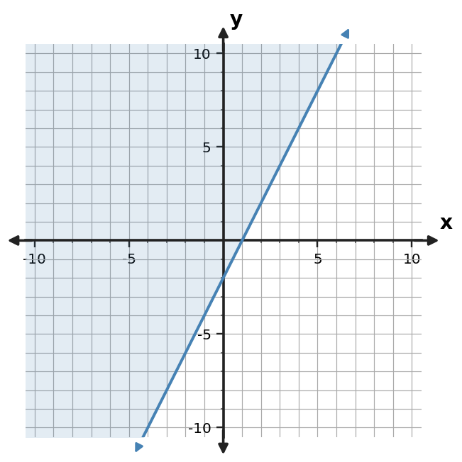
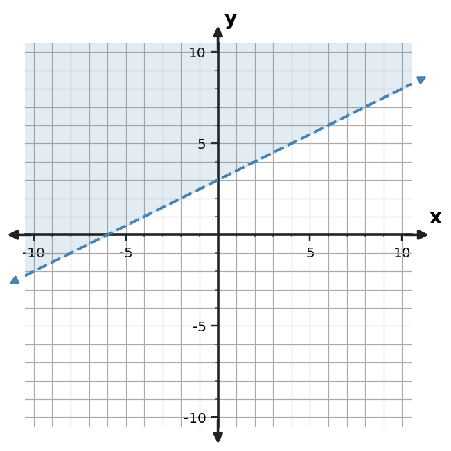
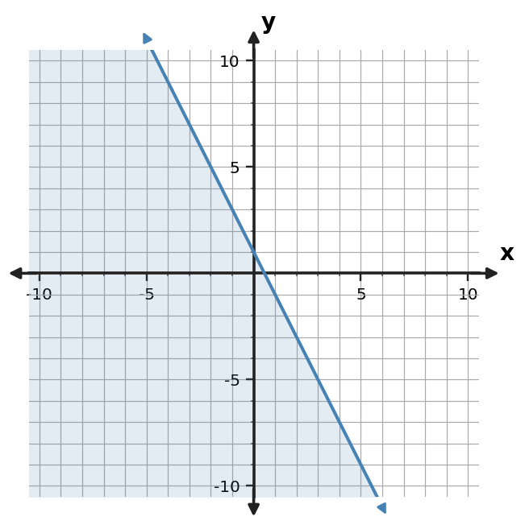
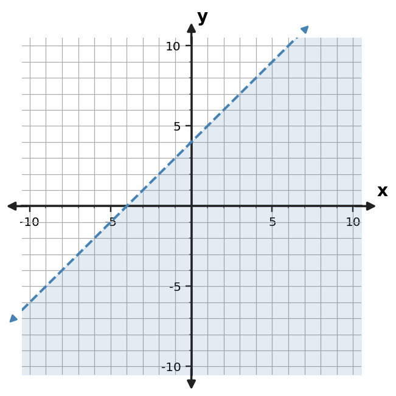
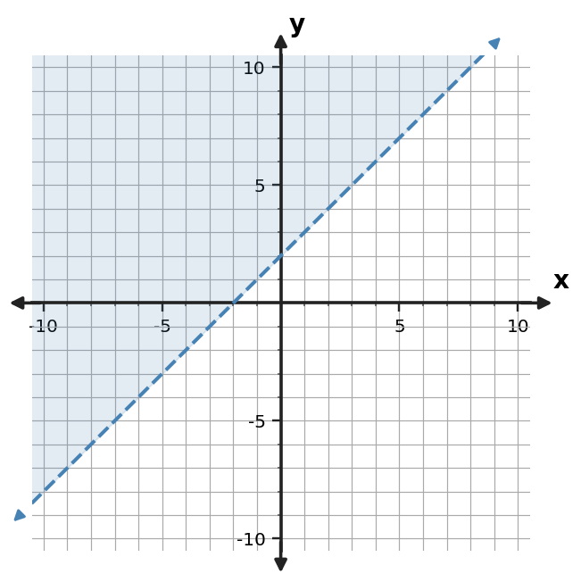

Algebra Practice 3.4 :::: Extra Practice
1. A student graphs $y \le -x+4$ with a dashed boundary and shades below. Identify the error.
2. Write an inequality represented by the shaded graph. Include the correct inequality symbol.

3. For $y \ge 2x-1$, state whether the boundary is solid or dashed and which side of the line is shaded.
4. Use the test-point table to decide whether $(0,0)$ belongs in the solution region for $y \le -x+4$.
| Test point | Left side $y$ | Boundary value | Satisfies? |
|---|---|---|---|
| $(0,0)$ | 0 | 4 | Yes |
5. Write an inequality represented by the shaded graph. Include the correct inequality symbol.

6. Write an inequality represented by the shaded graph. Include the correct inequality symbol.

7. A student graphs $y \lt 3x$ with a dashed boundary and shades above. Critique the graph and state the needed correction.
8. Write an inequality represented by the shaded graph. Include the correct inequality symbol.

9. For $y \le -2x-3$, state whether the boundary is solid or dashed and which side is shaded.
10. Use the test-point table to decide whether $(0,0)$ belongs in the solution region for $y \ge -2x+3$.
| Test point | Left side $y$ | Boundary value | Satisfies? |
|---|---|---|---|
| $(0,0)$ | 0 | 3 | No |
11. Construct the graph of $y \le -3x$ with the correct boundary style and shaded half-plane.
12. Write an inequality represented by the shaded graph. Include the correct inequality symbol.

13. A student graphs $y \gt 2x-1$ with a solid boundary and shades above. Identify the error.
14. Write an inequality represented by the shaded graph. Include the correct inequality symbol.

15. For $y \le -x+4$, state whether the boundary is solid or dashed and which side is shaded.
16. Use the test-point table to decide whether $(0,2)$ belongs in the solution region for $y \ge -x+1$.
| Test point | Left side y | Boundary value | Satisfies? |
|---|---|---|---|
| (0,2) | 2 | 1 | Yes |
17. Graph $y \le -x+4$ on a coordinate plane. Include the correct boundary style and shaded half-plane.
18. Write an inequality represented by the shaded graph. Include the correct inequality symbol.

19. A student graphs $y \ge -2x+3$ with a dashed boundary and shades above. Identify the error.
20. Write an inequality represented by the shaded graph. Include the correct inequality symbol.

21. For $y \gt 3x+2$, state whether the boundary is solid or dashed and which side of the line is shaded.
22. Use the test-point table to decide whether $(0,2)$ belongs in the solution region for $y \lt -2x+1$.
| Test point | Left side y | Boundary value | Satisfies? |
|---|---|---|---|
| (0,2) | 2 | 1 | No |
23. Construct the graph of $y \ge x-1$ with the appropriate boundary style and shaded half-plane.
24. Write an inequality represented by the shaded graph. Include the correct inequality symbol.